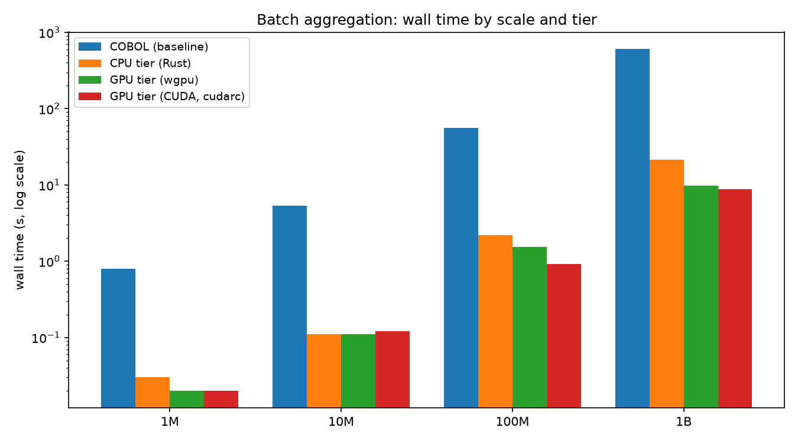

The migration you can prove · Open source, AGPL · Proof, not percentages
Bylazora is the byte-exact migration engine, open source under AGPL: a migrated workload's outputs must equal the legacy COBOL reference byte for byte, or the gate fails it. One Rust binary runs the gate and the production runtime across CPU, any GPU, and CUDA — measured 68.8x at one billion rows, every run IDENTICAL. Read the proof, clone the engine, or have us run your exit.
An estimated 220–800 billion lines of COBOL remain in production. The average COBOL developer is in their late 50s, roughly 10% retire every year, and about 70% of universities no longer teach the language.
Mainframe software is typically 30–50% of the total mainframe budget, large estates pay roughly $1,000–2,000 per MIPS per year, and pricing keeps trending up.
Migration is the highest-stakes project an enterprise runs. The industry's failures — a UK bank locked 1.9M customers out in 2018 — happened because systems were validated by inspection, not by proof.
We are equally honest about the other side: mainframes are reliable and cheap per workload. Our argument is the skills cliff, the licensing trajectory, and the strategic cost of lock-in — not that the mainframe is broken.
The workload's own characteristics decide which path it takes. We deliver all three.
Business logic re-implemented in a modern stack — a Rust core with parallel chunked reads and GPU-native kernels — on commodity hardware, NVIDIA or not. Removes the COBOL dependency entirely, unlocks modern tooling and AI integration.
The same source, compiled by open-source GnuCOBOL on commodity instances, with JCL batch orchestration re-expressed as cloud-native schedulers. Fastest and lowest-risk; modernize function by function later.
AI reads the estate — code, copybooks, JCL, runbooks — extracts business rules, and drafts translations and test suites. Humans review and sign every artifact; the equivalence gate verifies it. AI proposes; the gate disposes.
| Workload characteristic | Path |
|---|---|
| High data volume, aggregations, ETL-heavy | Move off COBOL — GPU/CPU tier |
| Logic-dense, low volume, thin test coverage | Rehost COBOL on cloud |
| Regulatory freeze, zero tolerance for change | Rehost COBOL on cloud |
| Medium complexity, staged transition | AI-assisted, then per-function decision |
Seven phases. Governance artifacts at every step, inspectable by you at any time.
The byte-exact gate, the three tiers, and the parsers are open source — AGPL for the engine, Apache-2.0 for the parsers. Anyone can read the validator, run it, and prove their own migration. Bylazora earns its keep on what surrounds the code: the managed run, the commercial licence for AGPL-averse estates, and the migration service.
AGPL-3.0 / Apache-2.0
Clone it, build it, hand it to your agents. The gate is the product and the product is free: byte-exact verification, three compute tiers, the C ABI, the MCP interface, and the agent rule packs. Forever.
SHA-256 + Ed25519 signed; verifiable offline with the public key.
USD 4,900/year per production team
For estates that cannot accept AGPL, or that embed the engine in closed products: a commercial licence with support, covering the organisation's own and client workloads at any scale and any number of installs. Offline-signed key, verified locally, air-gapped by construction.
Subscription
Hosted execution, the dashboards, the tamper-flagged audit trail, scale tiers, and SLAs — the run, not the bytes. Buy it with a card; the key lands in your portal and your inbox, then one command installs it.
What is in the box: the byte-exact validator, the three-tier engine (CPU, wgpu, cudarc), the C ABI, the MCP server, the copybook parser and DB2 importer, the judge harness, the sample migration, and the evidence annex. What stays ours: the playbook, the corpora, the replication recipes, and pricing — the know-how, not the code. And the AI boundary: your assistant can operate the engine through its MCP interface, propose, and measure — it cannot mark a job proven. Only the validator can.
Vendors market automation rates — “99.7% automated”. An automation rate is a claim about effort. It says nothing about correctness.
Our acceptance criterion is mechanical: exact fixed-point arithmetic (money stays integer cents, provably exact), byte-exact outputs (field values, totals, ordering, formatting), and continuous enforcement (the check runs in CI, in benchmarks, and during dual-run).
We do not promise a percentage. We promise a measurement.
compare_outputs(legacy, migrated)
final_balances.csv IDENTICAL
summary_report.csv IDENTICAL
60/60 records validated
0 mismatchesThe engine is the runtime of the new solution. Six positions in a migration, one tool:
| Specify | Golden reference | Build inside the gate | Route by benchmark | Cut over, running | Stay proven |
| Every job becomes a specification with a byte-level output contract | Legacy outputs and timings captured once - the contract everything is built against | Developers build backends of the engine; every iteration returns a byte diff, not a hunch | The harness measures each backend on candidate hardware; profiling picks the target state | The same binary that validated the jobs runs them; dual-run reconciles continuously | Every nightly run passes the gate; drift fails loudly with a diff |
The migrated system does not merely pass a test once. It runs on the engine that tests it — and the gate is the safety system of the new estate.
Three failure classes break every home-grown migration - and one more worry breaks every AI-drafted one. Each is neutralised here by a gate, not a habit.
Float intermediates silently corrupt money. The legacy reference computes in exact fixed-point and the validator requires identical bytes — no epsilon, no tolerance. A float artifact is a failed job with a diff, and a planted corpus that crosses 2^53 proves the gate catches it.
Windows that see tomorrow corrupt every calculation downstream. Backends run as pure functions of their declared inputs in fresh processes, windows are trailing-only by contract, and a planted look-ahead trap fails any implementation that peeks.
The same job run twice must return the same bytes. The harness re-runs every backend and byte-compares repetitions; warm and cold cache runs must agree; seeds are fixed and cross-machine reproductions are byte-identical by assertion.
AI-drafted migrations are verified by output, not provenance. The gate compares bytes against the legacy reference, so a hallucination fails with a diff before it can ship. The agent proposes; the gate disposes.
Why we can claim this: before the migration engine, we built quant and ML infrastructure at scale and made every one of these mistakes the expensive way. We catalogued the lessons, then rebuilt them as machine-checkable gates. The library does not ask your team to be careful — it refuses to certify anything else.
A representative COBOL batch program — per-account aggregation over transaction files — certified on the shipped Rust engine across three tiers and four scales, up to one billion rows: the CPU tier, the vendor-neutral wgpu GPU tier, and the CUDA container tier. Every output byte-identical to the COBOL reference. Three tiers share one parallel chunked host read (0.3.1): the cudarc CUDA tier leads on NVIDIA (68.8x at 1B, 8.75s), the wgpu tier holds 61.3x on any GPU or none, and the CPU tier 28.1x with no GPU.
| Scale | COBOL (baseline) | CPU tier (Rust) | GPU tier (wgpu, any GPU) | GPU tier (CUDA) |
|---|---|---|---|---|
| 1M rows | 1.00x | 26.3x | 39.5x | 39.5x |
| 10M rows | 1.00x | 48.5x | 48.5x | 44.5x |
| 100M rows | 1.00x | 25.5x | 36.1x | 60.4x |
| 1B rows | 1.00x | 28.1x | 61.3x | 68.8x |

The honest detail: the read path is the whole game, and all three tiers now share the same 8-thread parallel chunked reader (0.3.1). The cudarc CUDA tier holds 68.8x at 1B rows — 8.75s against the COBOL reference's 601.6s — the wgpu tier 61.3x on the same card or none, and the CPU tier 28.1x with no GPU. The RAPIDS container the cudarc tier replaces measured 0.2x at 1M and 8.9x at 1B; those numbers are provenance in the annex, and the container remains the escape hatch for arbitrary jobs. The vendor-neutral wgpu tier is byte-exact on NVIDIA, and on software Vulkan with no GPU at all — the same binary runs on AMD, Intel, Apple, and the web. We publish the crossover because it feeds profiling, not verdicts: the ratios say what is worth testing on each tier. The migration team balances infrastructure and cloud options, job complexity, and batch size to choose the best value-for-money target state. You never pay for acceleration that does not accelerate.
The test every migrated platform must pass: the day demand hits ten times normal. Tax time for a revenue agency. Month-end for a bank.
Migrated online workloads become stateless, horizontally-scalable services behind load balancers. Auto-scaling on request rate and latency SLOs; the data tier scales independently. Capacity is rehearsed against replays of captured production peak traffic.
GPU and CPU node pools pre-warm before the season opens and expand with the work queue. Spot fleets add cost-efficient burst capacity for checkpointable jobs; reserved capacity guarantees the floor. Sharded workloads add shards.
For every peak season we deliver the demand forecast from your run statistics, the capacity plan, the pre-warm runbook, SLOs with alerting — and the seasonal cost model. Peak days become a planned, budgeted, rehearsed event.
Beyond one GPU: workloads shard by business key — account, customer, policy — never by time, preserving inter-row semantics per shard. On commodity hardware the cudarc CUDA tier processed 100M rows in 0.92 seconds and 1B rows in 8.75 seconds end to end (60.4x and 68.8x the compiled COBOL baseline), the wgpu tier 1.54s and 9.8s (36.1x and 61.3x), and the CPU tier 2.18s and 21.4s. Larger estates partition across GPUs and nodes with near-linear scaling. Absolute seconds vary by machine; the ratios travel.
A representative estate, end to end, in six months. The calendar is fixed; the scope scales through parallel migration waves — each one safe because every function carries its own byte-exact proof.
| Program phase | Weeks | What happens |
|---|---|---|
| Grab + Review (discovery) | 1–4 | Code and documentation intake; AI-assisted inventory; hot-path ranking; data-interface catalog; replication test environment |
| Rebuild + Deploy + Migrate data | 5–16 | Parallel migration waves — every function re-implemented or rehosted on its tier and equivalence-proven before it proceeds |
| Test + shadow run | 17–20 | Dual-run against production through a full business cycle, reconciled continuously |
| Roll over + decommission | 21–24 | Per-function cutover, parallel-run sign-off, decommissioning, handover |
| Managed run (ongoing) | 25+ | SLO-managed operation, seasonal peak plans, continuous equivalence monitoring |
A worked example: nightly batch of 100M transactions, 3 hours of daily processing, one L40S-class GPU instance (18,176 CUDA cores) plus one CPU instance, 2 TB object storage, 200 GB monthly egress.
Roughly $380/month on AWS on-demand, before spot and commitment discounts — an 87–95% reduction against a conservative $3,000–8,000/month mainframe allocation. Commodity and non-NVIDIA GPU capacity generally prices below dedicated NVIDIA instances, and the wgpu tier runs on either — the profiling step prices the difference per estate.
Fixed-fee, value-anchored pricing - quoted against your assessed function inventory, not hours, and shared at proposal stage. The acceptance criterion is contractual and unchanged: byte-exact equivalence and the benchmark evidence.
Every engagement begins with a fixed-price proof trial: one representative job from your estate, reproduced byte-exact on your hardware, benchmarked across CPU and any GPU, with the gate demonstrated live. The trial fee is credited in full against the first migration wave.
Acceptance criteria are contractual: byte-exact equivalence and the benchmark evidence. All figures are indicative planning ranges, not quotes.
The proof trial takes one representative job and an afternoon: byte-exact reproduction, benchmarks across CPU and any GPU, the live gate demo — with no production change. The trial fee is credited in full against the first migration wave.
Email: hello@bylazora.com
Read The Engine The Governed Exit (method) The Evidence Annex Why migrations fail
Download the sample migration — a COBOL batch application and its migrated Rust engine, with the byte-exact gate as its CI regression test.